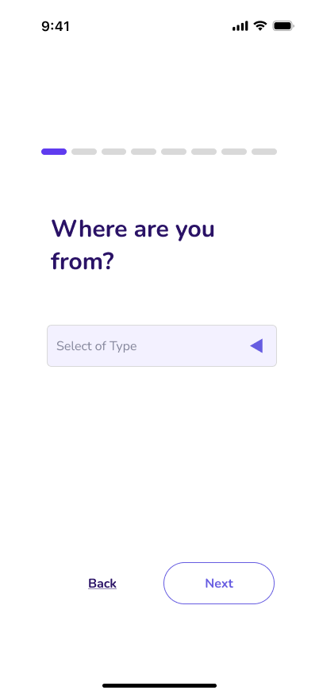
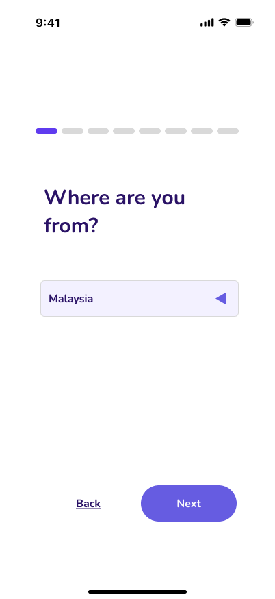

High-Fidelity Wireframes
Bringing the design to life
Version 1 — Initial Pastel Palette
For the initial version, I played around with a pastel-like color palette as I wanted the site to feel inviting and youthful. For the questions and main components, I standardized them to purple, pink, and blue.
Swipe to view all screens →
User Testing & Feedback
Iterating based on real feedback
I did user testing with 6 individuals. Through these sessions, I gained a few key insights on what to change:
Issue: Users mentioned their confusion with the buttons, stating there was not enough differentiation between the BACK and NEXT buttons. The shape of the buttons were also too similar to the text boxes.
✅ Clearer disabled/enabled buttons · Changed to pill-like shape
Before

→
After


Issue: Users pointed out the % matches appeared again in the comparison page — they thought it should be removed since schools would've already been added to their respective categories. It added clutter to an already crammed screen.
✅ Removed the % bubbles · Clearer separations between categories
Before

→
Version 2 — Refined Interactions
In between my interviews, I continuously iterated along the way. Version 2 kept the same pastel color palette as I worked towards changing other design features based on user feedback.
Swipe to view all screens →
In addition to the feature changes, I knew I had to change the color palette as I felt that it was too playful for my app's idea. This brought me to my final design.